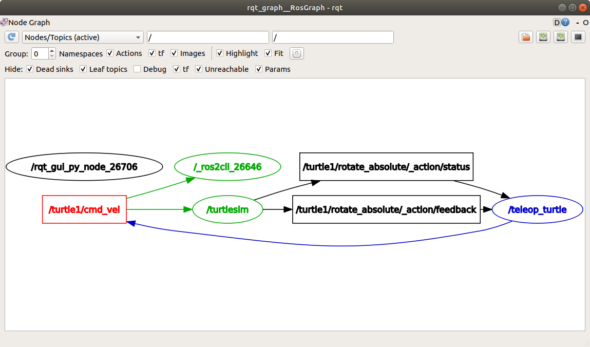

Understanding topics [待校准@13038]
Goal: Use rqt_graph and command line tools to introspect ROS 2 topics. [待校准@13039]
Tutorial level: Beginner [待校准@12711]
Time: 20 minutes [待校准@11829]
Contents [待校准@12037]
Background [待校准@11832]
ROS 2 breaks complex systems down into many modular nodes. Topics are a vital element of the ROS graph that act as a bus for nodes to exchange messages. [待校准@13040]

A node may publish data to any number of topics and simultaneously have subscriptions to any number of topics. [待校准@13041]

Topics are one of the main ways in which data is moved between nodes and therefore between different parts of the system. [待校准@13042]
Prerequisites [待校准@11884]
The previous tutorial provides some useful background information on nodes that is built upon here. [待校准@13043]
As always, don't forget to source ROS 2 in every new terminal you open. [待校准@12830]
Tasks [待校准@12042]
1 Setup [待校准@12831]
By now you should be comfortable starting up turtlesim. [待校准@13044]
Open a new terminal and run: [待校准@11892]
ros2 run turtlesim turtlesim_node
Open another terminal and run: [待校准@12833]
ros2 run turtlesim turtle_teleop_key
Recall from the previous tutorial that the names of these nodes are /turtlesim and /teleop_turtle by default. [待校准@13045]
2 rqt_graph [待校准@13046]
Throughout this tutorial, we will use rqt_graph to visualize the changing nodes and topics, as well as the connections between them. [待校准@13047]
The turtlesim tutorial tells you how to install rqt and all its plugins, including rqt_graph. [待校准@13048]
To run rqt_graph, open a new terminal and enter the command: [待校准@13049]
rqt_graph
You can also open rqt_graph by opening rqt and selecting Plugins > Introspection > Node Graph. [待校准@13050]

You should see the above nodes and topic, as well as two actions around the periphery of the graph (let's ignore those for now). If you hover your mouse over the topic in the center, you'll see the color highlighting like in the image above. [待校准@13051]
The graph is depicting how the /turtlesim node and the /teleop_turtle node are communicating with each other over a topic. The /teleop_turtle node is publishing data (the keystrokes you enter to move the turtle around) to the /turtle1/cmd_vel topic, and the /turtlesim node is subscribed to that topic to receive the data. [待校准@13052]
The highlighting feature of rqt_graph is very helpful when examining more complex systems with many nodes and topics connected in many different ways. [待校准@13053]
rqt_graph is a graphical introspection tool. Now we'll look at some command line tools for introspecting topics. [待校准@13054]
3 ros2 topic list [待校准@13055]
Running the ros2 topic list command in a new terminal will return a list of all the topics currently active in the system: [待校准@13056]
/parameter_events
/rosout
/turtle1/cmd_vel
/turtle1/color_sensor
/turtle1/pose
ros2 topic list -t will return the same list of topics, this time with the topic type appended in brackets: [待校准@13057]
/parameter_events [rcl_interfaces/msg/ParameterEvent]
/rosout [rcl_interfaces/msg/Log]
/turtle1/cmd_vel [geometry_msgs/msg/Twist]
/turtle1/color_sensor [turtlesim/msg/Color]
/turtle1/pose [turtlesim/msg/Pose]
These attributes, particularly the type, are how nodes know they're talking about the same information as it moves over topics. [待校准@13058]
If you're wondering where all these topics are in rqt_graph, you can uncheck all the boxes under Hide: [待校准@13059]

For now, though, leave those options checked to avoid confusion. [待校准@13060]
4 ros2 topic echo [待校准@13061]
To see the data being published on a topic, use: [待校准@13062]
ros2 topic echo <topic_name>
Since we know that /teleop_turtle publishes data to /turtlesim over the /turtle1/cmd_vel topic, let's use echo to introspect that topic: [待校准@13063]
ros2 topic echo /turtle1/cmd_vel
At first, this command won't return any data. That's because it's waiting for /teleop_turtle to publish something. [待校准@13064]
Return to the terminal where turtle_teleop_key is running and use the arrows to move the turtle around. Watch the terminal where your echo is running at the same time, and you'll see position data being published for every movement you make: [待校准@13065]
linear:
x: 2.0
y: 0.0
z: 0.0
angular:
x: 0.0
y: 0.0
z: 0.0
---
Now return to rqt_graph and uncheck the Debug box. [待校准@13066]
/_ros2cli_26646 is the node created by the echo command we just ran (the number might be different). Now you can see that the publisher is publishing data over the cmd_vel topic, and two subscribers are subscribed to it. [待校准@13067]
5 ros2 topic info [待校准@13068]
Topics don't have to only be one-to-one communication; they can be one-to-many, many-to-one, or many-to-many. [待校准@13069]
Another way to look at this is running: [待校准@13070]
ros2 topic info /turtle1/cmd_vel
Which will return: [待校准@12837]
Type: geometry_msgs/msg/Twist
Publisher count: 1
Subscription count: 2
6 ros2 interface show [待校准@12906]
Nodes send data over topics using messages. Publishers and subscribers must send and receive the same type of message to communicate. [待校准@13071]
The topic types we saw earlier after running ros2 topic list -t let us know what message type is used on each topic. Recall that the cmd_vel topic has the type: [待校准@13072]
geometry_msgs/msg/Twist
This means that in the package geometry_msgs there is a msg called Twist. [待校准@13073]
Now we can run ros2 interface show <msg type> on this type to learn its details. Specifically, what structure of data the message expects. [待校准@13074]
ros2 interface show geometry_msgs/msg/Twist
For the message type from above it yields: [待校准@13075]
# This expresses velocity in free space broken into its linear and angular parts.
Vector3 linear
float64 x
float64 y
float64 z
Vector3 angular
float64 x
float64 y
float64 z
This tells you that the /turtlesim node is expecting a message with two vectors, linear and angular, of three elements each. If you recall the data we saw /teleop_turtle passing to /turtlesim with the echo command, it's in the same structure: [待校准@13076]
linear:
x: 2.0
y: 0.0
z: 0.0
angular:
x: 0.0
y: 0.0
z: 0.0
---
7 ros2 topic pub [待校准@13077]
Now that you have the message structure, you can publish data onto a topic directly from the command line using: [待校准@13078]
ros2 topic pub <topic_name> <msg_type> '<args>'
The '<args>' argument is the actual data you'll pass to the topic, in the structure you just discovered in the previous section. [待校准@13079]
It's important to note that this argument needs to be input in YAML syntax. Input the full command like so: [待校准@13080]
ros2 topic pub --once /turtle1/cmd_vel geometry_msgs/msg/Twist "{linear: {x: 2.0, y: 0.0, z: 0.0}, angular: {x: 0.0, y: 0.0, z: 1.8}}"
--once is an optional argument meaning “publish one message then exit”. [待校准@13081]
You will see the following output in the terminal: [待校准@13082]
publisher: beginning loop
publishing #1: geometry_msgs.msg.Twist(linear=geometry_msgs.msg.Vector3(x=2.0, y=0.0, z=0.0), angular=geometry_msgs.msg.Vector3(x=0.0, y=0.0, z=1.8))
And you will see your turtle move like so: [待校准@13083]

The turtle (and commonly the real robots which it is meant to emulate) require a steady stream of commands to operate continuously. So, to get the turtle to keep moving, you can run: [待校准@13084]
ros2 topic pub --rate 1 /turtle1/cmd_vel geometry_msgs/msg/Twist "{linear: {x: 2.0, y: 0.0, z: 0.0}, angular: {x: 0.0, y: 0.0, z: 1.8}}"
The difference here is the removal of the --once option and the addition of the --rate 1 option, which tells ros2 topic pub to publish the command in a steady stream at 1 Hz. [待校准@13085]

You can refresh rqt_graph to see what's happening graphically. You will see that the ros2 topic pub ... node (/_ros2cli_30358) is publishing over the /turtle1/cmd_vel topic, which is being received by both the ros2 topic echo ... node (/_ros2cli_26646) and the /turtlesim node now. [待校准@13086]

Finally, you can run echo on the pose topic and recheck rqt_graph: [待校准@13087]
ros2 topic echo /turtle1/pose

You can see that the /turtlesim node is also publishing to the pose topic, which the new echo node has subscribed to. [待校准@13088]
8 ros2 topic hz [待校准@13089]
For one last introspection on this process, you can view the rate at which data is published using: [待校准@13090]
ros2 topic hz /turtle1/pose
It will return data on the rate at which the /turtlesim node is publishing data to the pose topic. [待校准@13091]
average rate: 59.354
min: 0.005s max: 0.027s std dev: 0.00284s window: 58
Recall that you set the rate of turtle1/cmd_vel to publish at a steady 1 Hz using ros2 topic pub --rate 1. If you run the above command with turtle1/cmd_vel instead of turtle1/pose, you will see an average reflecting that rate. [待校准@13092]
9 Clean up [待校准@13093]
At this point you'll have a lot of nodes running. Don't forget to stop them by entering Ctrl+C in each terminal. [待校准@13094]
Summary [待校准@12113]
Nodes publish information over topics, which allows any number of other nodes to subscribe to and access that information. In this tutorial you examined the connections between several nodes over topics using rqt_graph and command line tools. You should now have a good idea of how data moves around a ROS 2 system. [待校准@13095]
Next steps [待校准@12557]
Next you'll learn about another communication type in the ROS graph with the tutorial Understanding services [待校准@12998]. [待校准@13096]